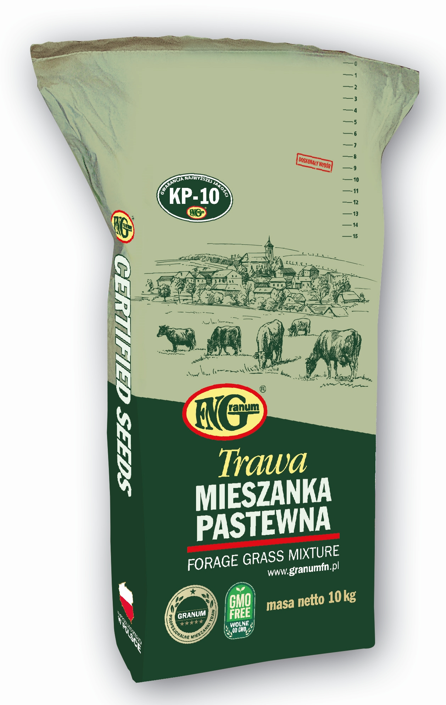

Mieszanki pastewne
MIESZANKI SZYBKO ROSNĄCE
Kośna z przeznaczeniem do dwuletniego intensywnego użytkowania na glebach żyznych i średnio żyznych.
WYSOKIE PLONOWANIE!
Mieszanka w zdecydowanej większości złożona z traw dwuletnich, co oznacza, że można ją zostawić po zimie na cały kolejny sezon. Charakteryzuje się (podobnie jak typ jary) szybkimi wschodami i szybkim przyroście początkowym, co zdecydowanie skraca czas pozyskania pierwszego pokosu.
Mieszankę KP-1 Turbo Typ Ozimy można wysiewać wiosną i użytkować dwa lata lub jako poplon ozimy siany po żniwach w sierpniu lub pierwszej dekadzie września.
Użytkowanie: kiszonki, sianokiszonki, zielonki
Norma wysiewu: 30-35 kg/ha.
MIESZANKI NA UŻYTKI PRZEMIENNE
Mieszanka do wieloletniego użytkowania, na grunty słabsze, toleruje okresowe przesuszenia gleby. Obecność kupkówki, stokłosy bezostnej, lucerny oraz zastosowanie festulolium przy zmniejszonym udziale życic decyduje o odporności na występowanie okresowego przesuszenia gleby. Polecana na tereny północno-wschodniej Polski. Typowa mieszanka na zielonkę, kiszonkę oraz sianokiszonkę. Obecność lucerny w składzie mieszanki poprawia wartość pokarmową, smakowitość oraz zwiększa wydajność masy zielonej przy obniżonej dawce nawożenia azotowego. Norma wysiewu: 35-40 kg/ha
Wieloletnia mieszanka na przemienne użytki zielone przeznaczona do intensywnej produkcji ze szczególnym przeznaczeniem na kiszonki i sianokiszonki. WYSOKIE PLONOWANIE! Bardzo wydajna mieszanka na użytki przemienne. KP-8, jest wdrażana i polecana w gospodarstwach specjalizujących się w hodowli bydła mlecznego. Testowana w praktyce, przez kilkuletni okres testowania uzyskała bardzo dobre oceny u bezpośrednich użytkowników. Udział życic wraz z festulolium i koniczyną łąkową, pozwala uzyskać bardzo wysokie plony zielonej masy o dużej wartości pokarmowej i dobrym smaku. Odpowiednio dobrany skład mieszanki sprzyja jej dobremu zakiszaniu. Mieszanka wykorzystywana do odnowy użytków zielonych metodą podsiewu. Norma wysiewu: 35-40 kg/ha

Mieszanka kośno-pastwiskowa bez motylkowych. Typ mieszanki traw pastewnych na grunty orne do uprawy w całym kraju. Przeznaczona do wieloletniego średnio intensywnego użytkowania na zielonki, siano i sianokiszonki. Brak motylkowych w składzie mieszanki poprawia zdolność zakiszania. Wyższe plony masy zielonej można uzyskać, stosując odpowiednio wysokie nawożenie azotowe. Norma wysiewu: 40 kg/ha.
Wieloletnia mieszanka traw do zakładania trwałych łąk, pastwisk oraz przemiennych użytków zielonych. Mieszanka składa się z podstawowych gatunków traw pastewnych zarówno form wysokich jak i niskich. Dodatkowo zastosowano kombinację różnych gatunków motylkowych drobnonasiennych. Uzyskana masa zielona może być skarmiana w postaci zielonki, siana lub sianokiszonki. Mieszanka nadaje się na gleby średniej żyzności. Norma wysiewu wynosi: 35-40 kg/ha.

MIESZANKI NA PASTWISKA
Mieszanka na pastwiska, do wieloletniego intensywnego użytkowania, polecana na grunty o średniej i dobrej żyzności. WYSOKIE PLONOWANIE! Mieszanka charakteryzująca się wysoką zdolnością plonowania. Dostarcza paszę o doskonałej wartości pokarmowej wzbogaconą udziałem koniczyny białej. Wysoka wartość zielonki oraz kiszonki w połączeniu z dobrą zimotrwałością stawia mieszankę w gronie najbardziej popularnych. Pastwisko założone w oparciu o tę mieszankę charakteryzuje się bardzo wysoką odpornością na udeptywanie, przygryzanie oraz szybkim odrostem. Norma wysiewu: 35-40 kg/ha
Wieloletnia mieszanka na pastwiska, do średnio intensywnego użytkowania, doskonale nadająca się na grunty mniej żyzne, suche lub okresowo suche. Skład prezentowanej mieszanki na pastwiska pozwala uzyskać bardzo dobre plony nawet na słabszych gruntach. Pastwisko założone w oparciu o tę mieszankę dostarcza wieloskładnikowej paszy o właściwej wartości pokarmowej wzbogaconej udziałem koniczyny białej. Norma wysiewu: 35-40 kg/ha.
MIESZANKI NA ŁĄKI
Mieszanka na gleby TORFOWE, okresowo zalewowe. Idealnie nadaje się na gleby o nieuregulowanych stosunkach wodnych. W prezentowanej mieszance zastosowano wyczyniec łąkowy, kostrzewę trzcinową oraz mietlicę białawą, czyli gatunki dobrze znoszące okresowe i nadmierne nawilgotnienie gleby. Zalecana jest na tereny okresowe zalewane. Uzyskana pasza nadaje się do skarmiania w postaci siana, jest chętnie zjadana przez zwierzęta. Norma wysiewu: 30-35 kg/ha.
MIESZANKI SPECJALNE
Mieszanka traw do wieloletniego użytkowania na gleby suche. W mieszance zastosowano gatunki traw doskonale znoszące długotrwałe niedobory wody. Kupkówka pospolita, kostrzewa trzcinowa są trawami, których udział zapewni uzyskanie odpowiednio dużej ilości masy zielonej z przeznaczeniem na siano i sianokiszonki na glebach małożyznych, długotrwale suchych. Zalecane częstsze koszenie, najlepiej przed wykłoszeniem roślin. Norma wysiewu: 35-40 kg/ha
Wysokobiałkowa mieszanka z dużym udziałem lucerny, przeznaczona na grunty orne zagrożne okresowym przesuszeniem. Do 3-letniego użytkowania, produkcja kiszonki, sianokiszonki. Mieszanka z dużym udziałem lucerny siewnej i wysokim udziale wartościowych gatunków traw łąkowych. Duża zawartość festulolium i kostrzewy łąkowej pozwala uzyskać z mieszanki bardzo wysoki plon masy zielonej o dużej koncentracji energii w pozyskiwanej paszy. Zastosowane odmiany lucerny wpływają na znaczne zwiększenie zawartości białka w runi. Mieszanka KS-12 pozwala uzyskać jakościowo lepszą paszę, przy właściwie zbilansowanym stosunku białka do węglowodanów oraz wapnia do fosforu. Najlepiej plonuje w warunkach korzystnych dla uprawy lucerny, ale sprawdza się również na stanowiskach suchych. Z pozyskanej paszy uzyskujemy doskonałe kiszonki i sianokiszonki przydatne do skarmiania wysokowydajnych krów mlecznych. Produkt posiada wysoką zawartość białka. Norma wysiewu: 30-35 kg

Mieszanka traw do odnowy użytków zielonych. Do podsiewu, dedykowana jest na gleby średnie i żyzne. W mieszance KS-14 zastosowano gatunki o najszybszym tempie wzrostu, najwyższym plonowaniu oraz wysokiej wartości pokarmowej. Użyto życic o zróżnicowanej wczesności i konkurencyjności. KS-14 przeznaczona jest do rekultywacji trwałych łąk i pastwisk metodą podsiewu. Metodę tą zaleca się w przypadku 40%-60% degradacji runi, znacznego zachwaszczenia lub gdy nie ma możliwości wykonania orki i pełnego obsiewu. Tak odnowiona łąka bądź pastwisko w zasadniczy sposób zwiększa swój potencjał produkcyjny dostarczając paszy o zdecydowanie lepszej jakości, już w pierwszym roku po wykonaniu podsiewu. Mieszanka KS-14 może być również wykorzystana do siewu po orce na gruntach ornych w celu założenia 3-4 letniego użytku przemiennego o wysokim plonowaniu.